Demonstration of DroneWQ functions and processing code
Summary
This notebook demonstrates an example workflow of DroneWQ using multispectral images collected by the MicaSense RedEdge-MX sensor over western Lake Erie on August 17, 2022. The workflow converts raw imagery to remote sensing reflectance (\(\mathrm{R}_{\mathrm{rs}}\)) and applies bio-optical algorithms to estimate chlorophyll a and total suspended matter (TSM) concentrations. The images are georeferenced, producing a final chlorophyll a mosaic of the entire dataset.
The Lake Erie drone dataset is available on Zenodo and is 5.84 GB unzipped. Depending on your computer’s speed, you may want to subset the data before running the full workflow. This notebook is set up to run directly if the Lake_Erie dataset is placed in the examples directory.
Contents
1. Setup
Import all the libraries needed for this notebook.
[42]:
import os
import dronewq
import glob
import numpy as np
import pandas as pd
import contextily as cx
import matplotlib.pyplot as plt
import matplotlib.image as mpimg
from cartopy.crs import Mercator
from rasterio.enums import Resampling
plt.rcParams['mathtext.default'] = 'regular'
Ensure that your imagery is manually organized using the following directory structure (you may name the main_dir directory anything you like, but the remaining folder names should match exactly as shown below):
<main_dir>/
raw_water_imgs/
align_img/
raw_sky_imgs/
panel/
Once your data are organized in this structure, simply specify the path to your main_dir below. In this example, the main_dir is named Lake_Erie.
This may need modification if your
Lake_Eriedirectory is placed elsewhere.
The output_dir will contain all processed data products after total radiance (\(\mathrm{L}_{\mathrm{t}}\)). lt_imgs and lt_thumbnails will be saved in the Lake_Erie main directory, while all other downstream products will be saved in a user-specificed directory. In this example, it is named hedley_dls_rrs to reflect the processing options used in this demonstration, but you may name it whatever you prefer.
Note that the Lake Erie drone dataset does not include raw_sky_imgs.
[43]:
dronewq.configure(main_dir='../Lake_Erie')
dronewq.configure(output_dir="../Lake_Erie/hedley_dls_rrs")
settings = dronewq.settings
2. View metadata
MicaSense raw images contain metatdata including sensor information, GPS coordianates, and more. We can use the write_metadata_csv() function to extract image metadata and save it as .csv.
Let’s open the first five lines of the .csv to take a look.
[44]:
metadata_path = dronewq.write_metadata_csv(settings.raw_water_dir, settings.output_dir)
img_metadata = pd.read_csv(metadata_path)
img_metadata.head()
Loading ImageSet from: ../Lake_Erie/raw_water_imgs
[44]:
| filename | dirname | DateStamp | TimeStamp | Latitude | LatitudeRef | Longitude | LongitudeRef | Altitude | SensorX | ... | FocalLength | Yaw | Pitch | Roll | SolarElevation | ImageWidth | ImageHeight | XResolution | YResolution | ResolutionUnits | |
|---|---|---|---|---|---|---|---|---|---|---|---|---|---|---|---|---|---|---|---|---|---|
| 0 | capture_1.tif | ../Lake_Erie/hedley_dls_rrs/capture_1.tif | 2022-08-17 | 15:37:04 | 41.828528 | N | -83.398762 | W | 265.061 | 4.8 | ... | 5.43432 | 218.376096 | 25.899967 | 335.837017 | 0.895362 | 1280 | 960 | 266.666667 | 266.666667 | mm |
| 1 | capture_2.tif | ../Lake_Erie/hedley_dls_rrs/capture_2.tif | 2022-08-17 | 15:37:08 | 41.828670 | N | -83.398764 | W | 265.554 | 4.8 | ... | 5.43432 | 221.427592 | 16.821391 | 341.184053 | 0.895530 | 1280 | 960 | 266.666667 | 266.666667 | mm |
| 2 | capture_3.tif | ../Lake_Erie/hedley_dls_rrs/capture_3.tif | 2022-08-17 | 15:37:10 | 41.828809 | N | -83.398760 | W | 265.968 | 4.8 | ... | 5.43432 | 218.898605 | 16.695405 | 343.643092 | 0.895655 | 1280 | 960 | 266.666667 | 266.666667 | mm |
| 3 | capture_4.tif | ../Lake_Erie/hedley_dls_rrs/capture_4.tif | 2022-08-17 | 15:37:13 | 41.828956 | N | -83.398761 | W | 266.420 | 4.8 | ... | 5.43432 | 216.716936 | 18.188710 | 345.889851 | 0.895738 | 1280 | 960 | 266.666667 | 266.666667 | mm |
| 4 | capture_5.tif | ../Lake_Erie/hedley_dls_rrs/capture_5.tif | 2022-08-17 | 15:37:16 | 41.829081 | N | -83.398763 | W | 267.018 | 4.8 | ... | 5.43432 | 214.429136 | 18.385695 | 347.772515 | 0.895863 | 1280 | 960 | 266.666667 | 266.666667 | mm |
5 rows × 21 columns
We can plot the altitude, latitude/longitude, and yaw angle metadata of the image captures to get a sense of the flight plan.
[45]:
fig, ax = plt.subplots(1,3, figsize=(10,3), layout='tight')
ax[0].plot(list(range(len(img_metadata))),img_metadata['Altitude'])
ax[0].set_ylabel('Altitude (m)')
ax[1].scatter(img_metadata['Longitude'], img_metadata['Latitude'])
ax[1].set_ylabel('Latitude')
ax[1].set_xlabel('Longitude')
ax[2].plot(list(range(len(img_metadata))),img_metadata['Yaw'])
ax[2].set_ylabel('Yaw')
[45]:
Text(0, 0.5, 'Yaw')
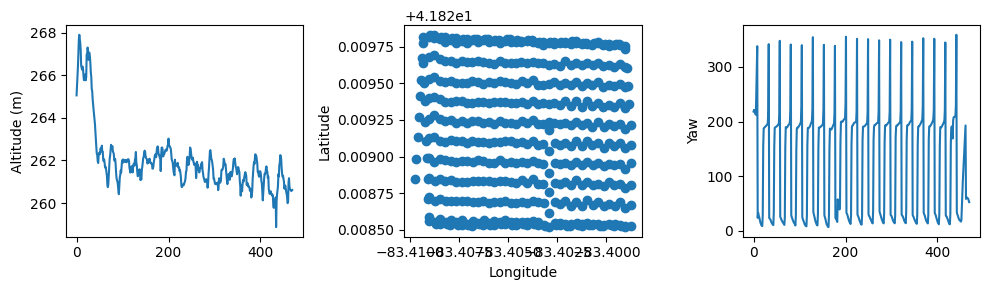
3. Process raw imagery to remote sensing reflectance
Now, let’s get to processing.
The RrsPipeline class is the main processing unit of DroneWQ. It allows you to define which methods are used at each stage of the processing pipeline, and the parameters for each selected method can be customized to suit your workflow.
[46]:
?dronewq.RrsPipeline
Init signature:
dronewq.RrsPipeline(
lw_method: dronewq.utils.data_types.Base_Compute_Method,
ed_method: dronewq.utils.data_types.Base_Compute_Method,
masking_method: dronewq.utils.data_types.Base_Compute_Method | None = None,
overwrite_lt: bool = False,
generate_thumbnails: bool = True,
workers: int = 1,
)
Docstring:
Main pipeline for dronewq.
Parameters
----------
output_folder : Path | str
Path to the output folder.
lw_method : Base_Compute_Method
Method used to calculate water leaving radiance.
If uncertain, you can start with `Mobley_rho()`.
ed_method : Base_Compute_Method
Method used to calculate downwelling irradiance (Ed).
If uncertain, you can start with `Dls_ed()`.
masking_method : Base_Compute_Method | None, optional
Method to mask pixels. Options are
`ThresholdMasking`, `StdMasking`, or None. Default is None.
overwrite_lt : bool, optional
Whether to overwrite existing Lt images.
Should have this set to True if you are running the pipeline for the
first time. Defaults to False, which saves time if you are rerunning.
generate_thumbnails : bool, optional
Whether to generate thumbnails. Defaults to True.
workers : int, optional
Number of parallel image processing instances. Defaults to 1.
Init docstring: Initialize the pipeline.
File: ~/Developer/DroneWQ/src/dronewq/core/pipeline.py
Type: type
Subclasses:
For this example, we’re calculating water leaving radiance (\(\mathrm{L}_{\mathrm{w}}\)) using the Hedley approach, calculating downwelling irradiance (\(\mathrm{E}_{\mathrm{d}}\)) using the downwelling light sensor (DLS), and are applying the default masking procedure. We’ll save processed images out to two directories called rrs_imgs and masked_rrs_imgs. Please see the Processing and theory section in the DroneWQ
readthedocs for more information on the different processing methods used here.
In summary, this code will process: Raw imagery -> \(\mathrm{L}_{\mathrm{t}}\) -> \(\mathrm{L}_{\mathrm{w}}\) (Hedley method) -> \(\mathrm{R}_{\mathrm{rs}}\) (using \(\mathrm{E}_{\mathrm{d}}\) from DLS) with pixel masking.
Note that we are changing the default
nir_thresholdfor pixel masking from 0.01 to 0.02 since 0.01 was not high enough to mask glint pixels in this dataset. It is important to consider these values since they may change according to your dataset.
If your hardware allows, you can adjust the workers parameter to potentially speed up processing. Keep in mind that the optimal value depends on your system’s hardware capabilities.
[47]:
from dronewq import Hedley, DlsEd, ThresholdMasking
pipeline = dronewq.RrsPipeline(
lw_method=Hedley(save_images=True),
ed_method=DlsEd(settings.output_dir),
masking_method=ThresholdMasking(nir_threshold=0.02),
workers=4,
)
pipeline.run()
Loading ImageSet from: ../Lake_Erie/raw_water_imgs
Loading ImageSet from: ../Lake_Erie/raw_water_imgs
Processing images: 100%|██████████| 470/470 [02:28<00:00, 3.17it/s]
[48]:
# Setting the paths for our outputs
lw_dir = settings.lw_dir
rrs_dir = settings.rrs_dir
masked_rrs_dir = settings.masked_rrs_dir
To grab these processed images and their metadata you can use the helper functions load_imgs() and load_metadata().
The images can easily be loaded in with load_imgs() function or even just with rasterio’s open() function. The higher level load_imgs() allows you to apply an altitude cutoff and limit the number of files being opened.
In the case of large processing jobs it will likely be more appropriate to loop through the files individually to save memory and not crash the python kernel.
Note that the
load_imgs()function returns a generator (one image at a time) instead of a list. This means that you should iterate over the returned object. However, you can also get all of the images by wrapping the returned object with alist()like in the following code.
[49]:
?dronewq.load_imgs
Signature:
dronewq.load_imgs(
img_dir: str | pathlib._local.Path,
count=10000,
start=0,
altitude_cutoff=0,
random=False,
)
Docstring:
Load images from a directory as numpy arrays with metadata filtering.
This function reads raster images from a specified directory and returns them
as an iterator of numpy arrays. Images can be filtered and selected based on
metadata criteria including count, starting position, altitude threshold, and
random sampling. The function leverages metadata stored in a CSV file to
efficiently select and load images.
Parameters
----------
img_dir : str | Path
Directory path containing the images to be loaded. The directory or its
parent must contain a 'metadata.csv' file with image information.
count : int, optional
Maximum number of images to load. If count exceeds the number of available
images after filtering, all available images are loaded. Default is 10000.
start : int, optional
Index of the first image to load when loading sequentially (random=False).
Zero-based indexing. Default is 0.
altitude_cutoff : float, optional
Minimum altitude threshold in meters. Images captured below this altitude
are excluded. Default is 0 (no altitude filtering).
random : bool, optional
If True, randomly samples 'count' images from the available set. If False,
loads images sequentially starting from 'start' index. Default is False.
Yields
------
numpy.ndarray
3D numpy array for each image with shape (bands, height, width), where
bands is the number of spectral bands in the raster image.
Notes
-----
The function expects a 'metadata.csv' file containing at least the following columns:
- 'filename': Name of the image file (used as index)
- 'Altitude': Altitude at which the image was captured
Images are loaded using rasterio, which supports various raster formats including
GeoTIFF. The function uses lazy loading via a generator pattern to minimize
memory usage when processing large datasets.
The metadata CSV location is determined by:
- If 'sky' is in img_dir: looks for metadata.csv in img_dir
- Otherwise: looks for metadata.csv in the parent directory of img_dir
Examples
--------
>>> # Load first 10 images from directory
>>> imgs = load_imgs('/path/to/images', count=10)
>>> for img in imgs:
... print(img.shape)
>>> # Load first 10 images without iterating
>>> imgs = load_imgs('/path/to/images', count=10)
>>> imgs = list(imgs)
File: ~/Developer/DroneWQ/src/dronewq/utils/images.py
Type: function
[50]:
?dronewq.load_metadata
Signature:
dronewq.load_metadata(
img_dir: str | pathlib._local.Path,
count=10000,
start=0,
altitude_cutoff=0,
random=False,
)
Docstring:
Load and filter image metadata from a CSV file.
This function reads image metadata from a CSV file and returns a filtered
pandas DataFrame based on specified criteria including image count, starting
position, altitude threshold, and random sampling. The metadata is used to
efficiently select images for loading without reading the actual image files.
Parameters
----------
img_dir : str | Path
Directory path containing the images. The directory or its parent must
contain a 'metadata.csv' file with image information.
count : int, optional
Maximum number of images to include in the returned DataFrame. If count
exceeds the number of available images, all available images are included.
Default is 10000.
start : int, optional
Index of the first image to include when selecting sequentially (random=False).
Zero-based indexing. Default is 0.
altitude_cutoff : float, optional
Minimum altitude threshold in meters. Images captured below this altitude
are excluded from the DataFrame. Applied after count/start filtering.
Default is 0 (no altitude filtering).
random : bool, optional
If True, randomly samples 'count' images from the available metadata.
If False, selects images sequentially starting from 'start' index.
Default is False.
Returns
-------
pandas.DataFrame
DataFrame containing metadata for selected images, with 'filename' as
the index. Only includes images meeting the altitude_cutoff criterion.
Notes
-----
The function expects a 'metadata.csv' file with at least the following columns:
- 'filename': Name of the image file (becomes DataFrame index)
- 'Altitude': Altitude at which the image was captured (in meters)
Additional columns may include:
- 'UTC-Time': Timestamp of image capture
- 'Latitude', 'Longitude': Geographic coordinates
- Other sensor-specific metadata
The metadata CSV location is determined by:
- If 'sky' appears in img_dir path: looks for metadata.csv in img_dir
- Otherwise: looks for metadata.csv in the parent directory of img_dir
This logic accommodates directory structures where sky images may have
separate metadata from water/ground images.
The filtering order is:
1. Load full metadata CSV
2. Set filename as index
3. Apply count and start (or random sampling)
4. Apply altitude_cutoff filter
Examples
--------
>>> # Load metadata for first 50 images
>>> df = load_metadata('/path/to/images', count=50)
>>> print(df.columns)
>>> # Load metadata for random sample with altitude filter
>>> df = load_metadata('/path/to/images', count=100, altitude_cutoff=15, random=True)
>>> print(f"Selected {len(df)} images above 15m altitude")
>>> # Load metadata starting from image 20
>>> df = load_metadata('/path/to/images', count=30, start=20)
>>> filenames = df.index.tolist()
>>> # Get all available metadata with altitude filter
>>> df = load_metadata('/path/to/images', altitude_cutoff=10)
>>> print(f"Mean altitude: {df['Altitude'].mean():.2f}m")
File: ~/Developer/DroneWQ/src/dronewq/utils/images.py
Type: function
Let’s retrieve the \(\mathrm{R}_{\mathrm{rs}}\) data (5 bands) and visualize the first five images:
[51]:
rrs_imgs_gen = dronewq.load_imgs(img_dir=rrs_dir, start=0, count=5)
img_metadata = dronewq.load_metadata(img_dir=rrs_dir, count=5)
# you can convert the generator to a list or array if needed
rrs_imgs = np.array(list(rrs_imgs_gen))
print(img_metadata.index)
band_names = ['blue', 'green', 'red', 'red edge', 'nir']
for j in range(len(rrs_imgs[0:5])):
fig, ax = plt.subplots(1,5, figsize=(10,3.5))
for i in range(5):
im = ax[i].imshow(rrs_imgs[j,i], cmap='viridis', vmin=0.001, vmax=0.02)
ax[i].set_xticks([])
ax[i].set_yticks([])
ax[i].set_title(band_names[i])
cbar = fig.colorbar(im, ax=ax[i], fraction=0.046, pad=0.04)
cbar.set_label(r'$R_{rs}\ (sr^{-1}$)', rotation=270, labelpad=15)
fig.tight_layout()
plt.show()
Index(['capture_1.tif', 'capture_2.tif', 'capture_3.tif', 'capture_4.tif',
'capture_5.tif'],
dtype='str', name='filename')
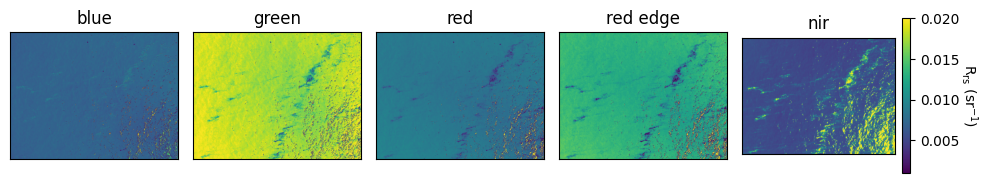
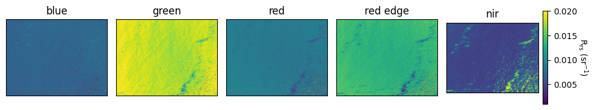
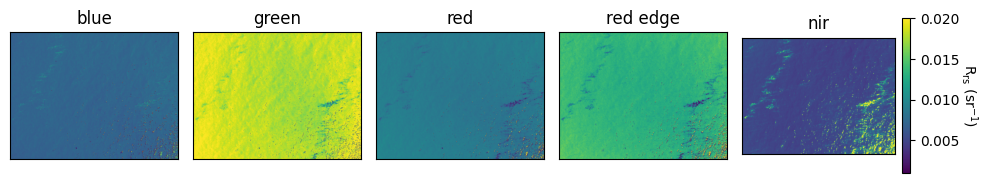
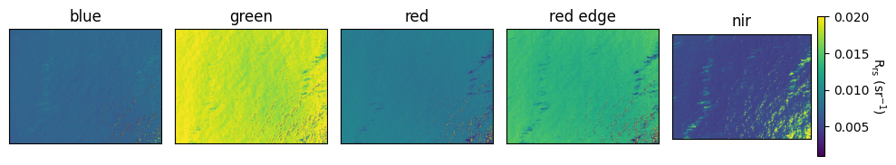
We can also visualize the masked \(\mathrm{R}_{\mathrm{rs}}\):
[52]:
masked_rrs_imgs_gen = dronewq.load_imgs(img_dir=masked_rrs_dir, start=0, count=5)
img_metadata = dronewq.load_metadata(img_dir=masked_rrs_dir, count=5)
masked_rrs_imgs = np.array(list(masked_rrs_imgs_gen))
print(img_metadata.index)
for j in range(len(masked_rrs_imgs[0:5])):
fig, ax = plt.subplots(1,5, figsize=(10,3.5))
for i in range(5):
im = ax[i].imshow(masked_rrs_imgs[j,i],cmap='viridis', vmin=0.001, vmax=0.02)
ax[i].set_xticks([])
ax[i].set_yticks([])
ax[i].set_title(band_names[i])
cbar = fig.colorbar(im, ax=ax[i], fraction=0.046, pad=0.04)
cbar.set_label(r'$R_{rs}\ (sr^{-1}$)', rotation=270, labelpad=15)
fig.tight_layout()
plt.show()
Index(['capture_1.tif', 'capture_2.tif', 'capture_3.tif', 'capture_4.tif',
'capture_5.tif'],
dtype='str', name='filename')
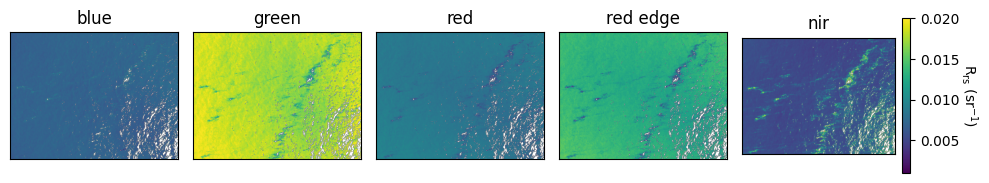
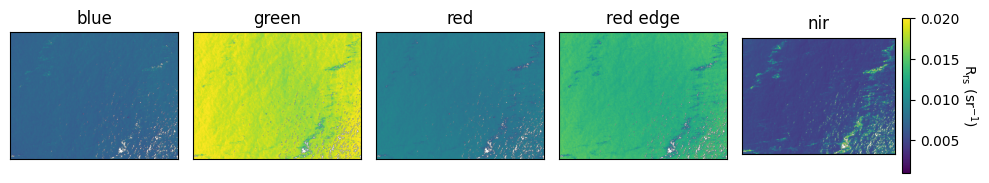
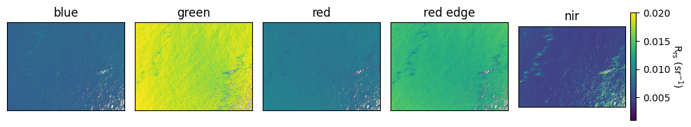
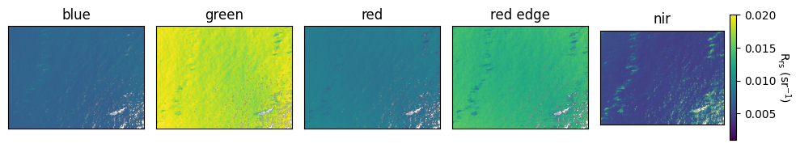
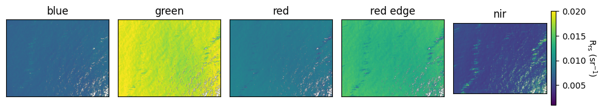
Let’s plot the masked \(\mathrm{R}_{\mathrm{rs}}\) spectra of the first 25 images:
[53]:
masked_rrs_imgs_gen = dronewq.load_imgs(img_dir = masked_rrs_dir, count=25)
masked_rrs_imgs = np.array(list(masked_rrs_imgs_gen))
fig, ax = plt.subplots(1,1, figsize=(6,3))
wv = [475, 560, 668, 717, 842]
color_map = plt.get_cmap("viridis")
colors = [color_map(i) for i in np.linspace(0, 1, len(masked_rrs_imgs))]
for i in range(len(masked_rrs_imgs)):
plt.plot(wv, np.nanmean(masked_rrs_imgs[i,0:5,:,:],axis=(1,2)), marker = 'o', color=colors[i], label="")
plt.xlabel('Wavelength (nm)')
plt.ylabel(r'$R_{rs}\ (sr^{-1}$)')
plt.plot(wv, np.nanmean(masked_rrs_imgs[:,0:5,:,:], axis=(0,2,3)), marker = 'o', color='black', linewidth=5, label='Mean')
plt.legend(frameon=False)
[53]:
<matplotlib.legend.Legend at 0x7fad35002e90>
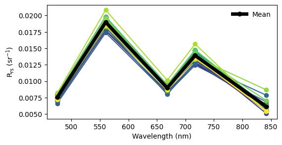
Let’s compare the \(\mathrm{R}{\mathrm{rs}}\) spectra from our MicaSense data to an \(\mathrm{R}{\mathrm{rs}}\) spectrum retrieved by a satellite at the same location and time. Below is a plot of \(\mathrm{R}{\mathrm{rs}}\) from the Ocean and Land Color Instrument (OLCI) on board the European Sentinel-3A satellite. OLCI measures additional spectral bands, which is why there are more points on the plot. Despite this, the overall spectral shape closely matches the MicaSense-derived \(\mathrm{R}{\mathrm{rs}}\). The troughs at 475 nm and 668 nm correspond to chlorophyll absorption, while the peak at 717 nm is likely due to scattering by phytoplankton particles.
|56d53b86a77846ba9986642fe1d60424|
Let’s plot the \(\mathrm{L}{\mathrm{t}}\), \(\mathrm{L}{\mathrm{w}}\), \(\mathrm{E}{\mathrm{d}}\) spectra as well. First, we need to retrieve all the data.
[54]:
lt_imgs = dronewq.load_imgs(img_dir = settings.lt_dir, count=25)
lw_imgs = dronewq.load_imgs(img_dir = settings.lw_dir, count=25)
csv_path = os.path.join(settings.output_dir, 'dls_ed.csv')
dls_ed = pd.read_csv(csv_path)
rrs_imgs = dronewq.load_imgs(img_dir = rrs_dir, count=25)
masked_rrs_imgs = dronewq.load_imgs(img_dir = masked_rrs_dir, count=25)
[55]:
fig, axs = plt.subplots(2,2, figsize=(10,5))
axs = axs.ravel()
wv = [475, 560, 668, 717, 842]
colors = plt.get_cmap("viridis")(np.linspace(0,1,25))
#lt
total_mean = []
for i, img in enumerate(lt_imgs):
img_mean = np.nanmean(img[0:5,:,:], axis=(1,2))
total_mean.append(img_mean)
axs[0].plot(wv, img_mean, marker = 'o', color=colors[i], label="")
axs[0].set_xlabel('Wavelength (nm)')
axs[0].set_ylabel(r'$L_t\ (mW\ m^2\ sr^{-1}\ nm^{-1}$)')
axs[0].plot(wv, np.mean(total_mean, axis=0), marker = 'o', color='black', linewidth=5, label='Mean')
axs[0].legend(frameon=False)
#dls ed
dls_colors = plt.get_cmap("viridis")(np.linspace(0,1,len(dls_ed)))
for i in range(len(dls_ed)):
axs[1].plot(wv, dls_ed.iloc[i,1:6], marker = 'o', color=dls_colors[i])
axs[1].set_xlabel('Wavelength (nm)')
axs[1].set_ylabel(r'$E_d\ (mW\ m^2\ nm^{-1}$)')
axs[1].plot(wv, dls_ed.iloc[:,1:6].mean(axis=0), marker = 'o', color='black', linewidth=5, label='Mean')
#rrs_imgs
total_mean = []
for i, img in enumerate(rrs_imgs):
img_mean = np.nanmean(img[0:5,:,:],axis=(1,2))
total_mean.append(img_mean)
axs[2].plot(wv, img_mean, marker = 'o', color=colors[i], label="")
axs[2].set_xlabel('Wavelength (nm)')
axs[2].set_ylabel(r'$R_{rs}\ (sr^{-1}$)')
axs[2].plot(wv, np.mean(total_mean, axis=0), marker = 'o', color='black', linewidth=5, label='Mean')
#rrs_imgs_masked
total_mean = []
for i, img in enumerate(masked_rrs_imgs):
img_mean = np.nanmean(img[0:5,:,:],axis=(1,2))
total_mean.append(img_mean)
axs[3].plot(wv, img_mean, marker = 'o', color=colors[i], label="")
axs[3].set_xlabel('Wavelength (nm)')
axs[3].set_ylabel(r'$R_{rs}\ (sr^{-1}$)')
axs[3].plot(wv, np.mean(total_mean, axis=0), marker = 'o', color='black', linewidth=5, label='Mean')
fig.tight_layout()
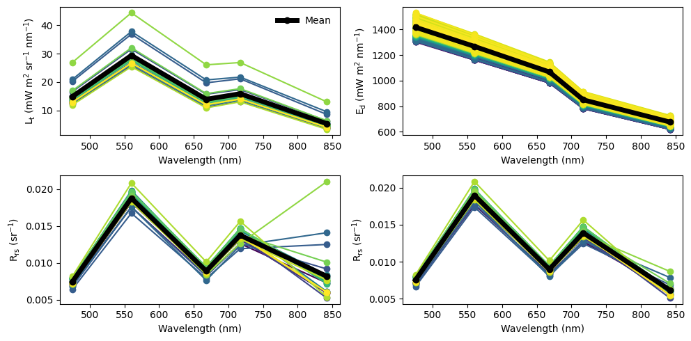
The RrsPipeline class also saves images processed to total radiance (\(\mathrm{L}{\mathrm{t}}\)) as stacked red-green-blue (RGB) .jpg files in a directory called lt_thumbnails. These thumbnails provide a quick way to visually inspect the imagery and see what the water surface looked like during flight. Let’s open a few to take a look:
[56]:
def capture_path_to_int(path : str) -> int:
return int(os.path.basename(path).split('_')[-1].split('.')[0])
thumbnail_path = os.path.join(settings.main_dir, 'lt_thumbnails')
lt_thumbnails = sorted(glob.glob(thumbnail_path + '/*.jpg'), key = capture_path_to_int)[10:]
fig, axs = plt.subplots(2,3, figsize=(6,4), sharex=True, sharey=True, layout='tight')
axs = axs.ravel()
for i in range(6):
image = mpimg.imread(lt_thumbnails[i])
axs[i].imshow(image)
axs[i].set_title(os.path.basename(lt_thumbnails[i]))
plt.show()
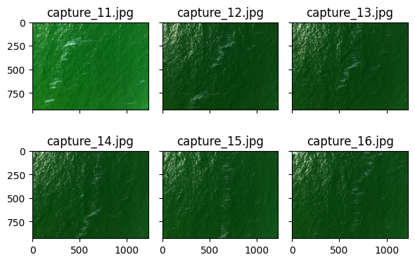
4. Convert to point samples
You may want to average values from each image to work with point-based samples. The code below calculates the median \(\mathrm{R}_{\mathrm{rs}}\) across bands for each image and saves the results to a Pandas DataFrame along with the directory name, latitude, and longitude.
[57]:
masked_rrs_imgs = dronewq.load_imgs(img_dir = masked_rrs_dir)
img_metadata = dronewq.load_metadata(img_dir = masked_rrs_dir)
# Compute per-image median for first 5 bands (shape -> (n_images, 5))
# We take median across spatial dims (H, W)
medians = []
for img in masked_rrs_imgs:
# Handle the all-NaN case here
if np.isnan(img[:5, :, :]).all():
med = np.full(5, np.nan) # or any default value
else:
med = np.nanmedian(img[:5, :, :], axis=(1, 2))
medians.append(med)
# Build dataframe safely and assign median band values
df = img_metadata[['dirname', 'Latitude', 'Longitude']].copy()
df[['rrs_blue', 'rrs_green', 'rrs_red', 'rrs_rededge', 'rrs_nir']] = medians
# Show result
df.head()
[57]:
| dirname | Latitude | Longitude | rrs_blue | rrs_green | rrs_red | rrs_rededge | rrs_nir | |
|---|---|---|---|---|---|---|---|---|
| filename | ||||||||
| capture_1.tif | ../Lake_Erie/hedley_dls_rrs/capture_1.tif | 41.828528 | -83.398762 | 0.007012 | 0.017829 | 0.008522 | 0.012956 | 0.005471 |
| capture_2.tif | ../Lake_Erie/hedley_dls_rrs/capture_2.tif | 41.828670 | -83.398764 | 0.007162 | 0.018282 | 0.008805 | 0.013387 | 0.005055 |
| capture_3.tif | ../Lake_Erie/hedley_dls_rrs/capture_3.tif | 41.828809 | -83.398760 | 0.007174 | 0.018256 | 0.008776 | 0.013331 | 0.005070 |
| capture_4.tif | ../Lake_Erie/hedley_dls_rrs/capture_4.tif | 41.828956 | -83.398761 | 0.007158 | 0.018260 | 0.008775 | 0.013308 | 0.005082 |
| capture_5.tif | ../Lake_Erie/hedley_dls_rrs/capture_5.tif | 41.829081 | -83.398763 | 0.007195 | 0.018344 | 0.008787 | 0.013316 | 0.005089 |
These values can be easily saved to a csv file:
[58]:
median_rrs_path = settings.output_dir / 'median_rrs.csv'
df.to_csv(median_rrs_path)
5. Apply bio-optical algorithms
We can also apply bio-optical algorithms to estimate chlorophyll a and total suspended matter (TSM) concentrations. For more information on each algorithm, see the Processing and theory section in the DroneWQ readthedocs. Here, we apply the blended NASA chlorophyll a algorithm (Hu et al., 2019).
[59]:
masked_rrs_imgs = dronewq.load_imgs(img_dir = masked_rrs_dir)
chl_hu_ocx_values = []
for img in masked_rrs_imgs:
result = dronewq.chl_hu_ocx(img)
chl_hu_ocx_values.append(result)
chl_hu_ocx_values = np.array(chl_hu_ocx_values)
print(chl_hu_ocx_values.shape)
(470, 928, 1227)
Let’s take a quick look at a histogram of all chlorophyll a values:
[60]:
plt.hist(chl_hu_ocx_values.ravel(), range=(0, 30))
print(np.nanmedian(chl_hu_ocx_values))
11.653076
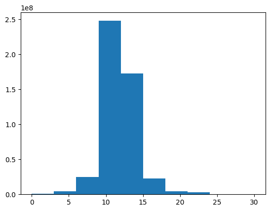
[61]:
# Cleanup Memory
del chl_hu_ocx_values
The median value is approximately 10 mg \(m^{-3}\), which is reasonable for Lake Erie.
Next, we can save new .tif files generated with this algorithm.
[62]:
dronewq.save_wq_imgs(rrs_dir = masked_rrs_dir, wq_algs = ['chl_hu_ocx'])
Processing images: 100%|██████████| 470/470 [00:29<00:00, 15.97it/s]
Let’s visualize a few chlorophyll a images.
[63]:
chl_imgs = dronewq.load_imgs(img_dir = settings.chl_hu_ocx_dir, start=0, count=6)
img_metadata = dronewq.load_metadata(img_dir = settings.chl_hu_ocx_dir, count=6)
print(img_metadata.index)
fig, axs = plt.subplots(2,3, figsize=(6,3), sharex=True, sharey=True, constrained_layout=True)
axs = axs.ravel()
for i, img in enumerate(chl_imgs):
im = axs[i].imshow(img[0,:,:], cmap='Greens', vmin=0, vmax=20)
cbar_ax = fig.add_axes((0.99, 0.1, 0.02, 0.8))
fig.colorbar(im, cax=cbar_ax, label='Chlorophyll a (mg $m^{-3}$)')
plt.show()
Index(['capture_1.tif', 'capture_2.tif', 'capture_3.tif', 'capture_4.tif',
'capture_5.tif', 'capture_6.tif'],
dtype='str', name='filename')
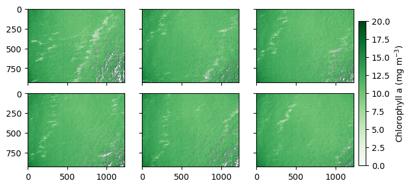
We can also compute and save the average chlorophyll a and TSM concentrations for each image in DataFrame, allowing them to be used as point-based data:
[64]:
df = pd.read_csv(median_rrs_path)
masked_rrs_imgs_hedley = dronewq.load_imgs(img_dir = masked_rrs_dir)
chl_hu_ocx_imgs = []
tsm_nechad_imgs = []
for img in masked_rrs_imgs_hedley:
# Check if image is completely NaN
if np.isnan(img[:5, :, :]).all():
med = np.nan
chl_hu_ocx_imgs.append(med)
tsm_nechad_imgs.append(med)
continue
chl_median = np.nanmedian(dronewq.chl_hu_ocx(img), axis=(0,1))
tsm_median = np.nanmedian(dronewq.tsm_nechad(img), axis=(0,1))
chl_hu_ocx_imgs.append(chl_median)
tsm_nechad_imgs.append(tsm_median)
chl_hu_ocx_imgs = np.array(chl_hu_ocx_imgs)
tsm_nechad_imgs = np.array(tsm_nechad_imgs)
df['chl_hu_ocx'] = chl_hu_ocx_imgs
df['tsm_nechad'] = tsm_nechad_imgs
del chl_hu_ocx_imgs
del tsm_nechad_imgs
df.head()
[64]:
| filename | dirname | Latitude | Longitude | rrs_blue | rrs_green | rrs_red | rrs_rededge | rrs_nir | chl_hu_ocx | tsm_nechad | |
|---|---|---|---|---|---|---|---|---|---|---|---|
| 0 | capture_1.tif | ../Lake_Erie/hedley_dls_rrs/capture_1.tif | 41.828528 | -83.398762 | 0.007012 | 0.017829 | 0.008522 | 0.012956 | 0.005471 | 11.630777 | 4.799673 |
| 1 | capture_2.tif | ../Lake_Erie/hedley_dls_rrs/capture_2.tif | 41.828670 | -83.398764 | 0.007162 | 0.018282 | 0.008805 | 0.013387 | 0.005055 | 11.683230 | 4.905617 |
| 2 | capture_3.tif | ../Lake_Erie/hedley_dls_rrs/capture_3.tif | 41.828809 | -83.398760 | 0.007174 | 0.018256 | 0.008776 | 0.013331 | 0.005070 | 11.609665 | 4.894979 |
| 3 | capture_4.tif | ../Lake_Erie/hedley_dls_rrs/capture_4.tif | 41.828956 | -83.398761 | 0.007158 | 0.018260 | 0.008775 | 0.013308 | 0.005082 | 11.653489 | 4.894382 |
| 4 | capture_5.tif | ../Lake_Erie/hedley_dls_rrs/capture_5.tif | 41.829081 | -83.398763 | 0.007195 | 0.018344 | 0.008787 | 0.013316 | 0.005089 | 11.658862 | 4.898822 |
These values can be easily saved to a csv file:
[65]:
# Save as csv
median_rrs_wq_path = settings.output_dir / 'median_rrs_and_wq.csv'
df.to_csv(median_rrs_wq_path)
We can use this DataFrame to create maps of point samples showing the mean chlorophyll a and TSM concentrations:
[82]:
df = pd.read_csv(median_rrs_wq_path)
fig, ax = plt.subplots(1,2, figsize=(8,3), layout='tight')
g1 = ax[0].scatter(df['Latitude'], df['Longitude'], c=df['chl_hu_ocx'], cmap='Greens', vmin=10, vmax=12)
g2 = ax[1].scatter(df['Latitude'], df['Longitude'], c=df['tsm_nechad'], cmap='YlOrRd', vmin=4, vmax=6)
cbar = fig.colorbar(g1, ax=ax[0])
cbar.set_label('Chlorophyll a (mg $m^{-3}$)', rotation=270, labelpad=12)
cbar = fig.colorbar(g2, ax=ax[1])
cbar.set_label('TSM (mg/L)', rotation=270, labelpad=12)
plt.show()
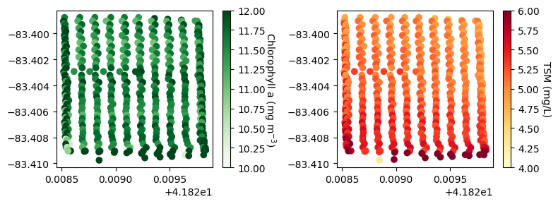
6. Georeference and mosaic chlorophyll a images
We can georeference the images using the sensor’s yaw, pitch, roll, latitude, longitude, and altitude. Note that georeferencing may be inaccurate if the yaw, pitch, and roll data are imprecise. Let’s review the options available in the georeference() function.
[67]:
?dronewq.georeference
Signature:
dronewq.georeference(
metadata,
input_dir,
output_dir,
lines=None,
altitude=None,
yaw=None,
pitch=0,
roll=0,
axis_to_flip=1,
) -> None
Docstring:
Georeference a set of image captures using their metadata and orientation
parameters, producing georeferenced GeoTIFF files.
For each capture, this function builds an affine transformation using:
- focal length,
- sensor size,
- image dimensions,
- GPS coordinates,
- yaw/pitch/roll (from metadata or provided overrides).
The function then applies the transform and saves the output as a GeoTIFF
in `output_dir`. Captures may be restricted to specific flight lines
(as produced by `compute_flight_lines()`).
Parameters
----------
metadata : pandas.DataFrame
DataFrame containing per-image metadata. Must include:
FocalLength, SensorX, SensorY, ImageWidth, ImageHeight,
Latitude, Longitude, Altitude, Pitch, Roll, Yaw, filename.
input_dir : str
Directory containing the source images.
output_dir : str
Directory where georeferenced images are written.
lines : list[dict] or None, optional
Flight line definitions such as those returned by
`compute_flight_lines()`. If None, all captures are processed.
altitude : float or None, optional
Override altitude for all captures. If None, metadata altitude is used.
yaw : float or None, optional
Override yaw for all captures. If None, metadata yaw is used.
pitch : float, optional
Override pitch angle for all captures. Default is 0.
roll : float, optional
Override roll angle for all captures. Default is 0.
axis_to_flip : int or None, optional
Axis along which to flip the image before writing. Default is 1.
Set to None to disable flipping.
Returns
-------
None
Writes georeferenced `.tif` files into `output_dir`.
File: ~/Developer/DroneWQ/src/dronewq/core/georeference.py
Type: function
There are two options for georeferencing: you can either set fixed parameters or allow the function to use values saved in the image metadata.
In this example, the image metadata lists the altitude of ~260-265 m, but the flight was planned for 87 m. We will therfore use a set altitude of 87 m.
For the sensor yaw angle: if it remains consistent throughout the flight, a single fixed value can be used. If the yaw changes between transects, as in this example, you should provide a separate yaw value for each transect. The georeference() function can accept a lines parameter, which can be created manually or generated automatically using the compute_flight_lines() function. This produces a list of capture indices per transect with the median yaw angle, ignoring images collected
during turns. More details are available in the Processing and Theory section of the DroneWQ Read the Docs.
It is recommended to test the georeferencing on a few captures containing shoreline or land features. You can visualize these against a satellite basemap or import them into GIS software to assess accuracy. In this example, we created subsets in new folders (rrs_hedley_subset and lt_thumbnails_subset) with captures 433–450, which include the shoreline, for testing.
Option 1: Using georeference() with the automatic compute_flight_lines() function generates a flight_lines list, where the yaw angle varies from 207° to 25°.
[68]:
rrs_imgs_subset_path = settings.output_dir / 'rrs_imgs_subset'
img_metadata = dronewq.load_metadata(img_dir = rrs_imgs_subset_path, start=432, count=18)
img_metadata = img_metadata.reset_index()
flight_lines = dronewq.compute_flight_lines(img_metadata.Yaw, 87, 0, 0, threshold=100)
flight_lines
[68]:
[{'start': 0,
'end': 9,
'yaw': 207.89967631978038,
'pitch': 0,
'roll': 0,
'alt': 87},
{'start': 10,
'end': 18,
'yaw': 25.85588214075483,
'pitch': 0,
'roll': 0,
'alt': 87}]
We can update the metadata to change file extensions from .tif to .jpg and then run georeference() on the lt_thumbnails_subset:
[69]:
img_metadata['filename'] = img_metadata['filename'].apply(lambda x : x.replace('.tif', '.jpg'))
input_dir = settings.main_dir / 'lt_thumbnails_subset'
output_dir = settings.main_dir / 'automatic_georeferenced_lt_thumbnails_subset'
lines = flight_lines
dronewq.georeference(img_metadata, input_dir, output_dir, lines)
100%|██████████| 17/17 [00:00<00:00, 89.78it/s]
When we plot these images in QGIS, it looks like: |3cc51a723b854be8952029b48dd1d912|
You can observe that using the metadata yaw angle for georeferencing does not always produce accurate results.
Option 2: Running georeference() with fixed yaw angles of 90° and 270°.
[70]:
flight_lines = dronewq.compute_flight_lines(img_metadata.Yaw, 87, 0, 0, threshold=100)
even_yaw = 90
odd_yaw = 270
threshold = np.median(img_metadata.Yaw)
for line in flight_lines:
line.update(yaw = even_yaw if line['yaw'] < threshold else odd_yaw)
flight_lines
[70]:
[{'start': 0, 'end': 9, 'yaw': 270, 'pitch': 0, 'roll': 0, 'alt': 87},
{'start': 10, 'end': 18, 'yaw': 90, 'pitch': 0, 'roll': 0, 'alt': 87}]
[71]:
input_dir = settings.main_dir / 'lt_thumbnails_subset'
output_dir = settings.main_dir / 'manual_georeferenced_lt_thumbnails_subset'
lines = flight_lines
dronewq.georeference(img_metadata, input_dir, output_dir, lines)
100%|██████████| 17/17 [00:00<00:00, 87.10it/s]
When we plot these images in QGIS: |e289855cc3ea4043b75325e595c6df80|
Using these fixed yaw angles results in improved georeferencing, with the shoreline aligning more closely with the satellite basemap.
Therefore, we will apply fixed yaw angles of 90° and 270° to georeference the masked_chl_hu_ocx_imgs:
[72]:
metadata = pd.read_csv(metadata_path)
flight_lines = dronewq.compute_flight_lines(metadata.Yaw, 87, 0, 0)
even_yaw = 90
odd_yaw = 270
threshold = np.median(metadata.Yaw)
for line in flight_lines:
line.update(yaw = even_yaw if line['yaw'] < threshold else odd_yaw)
flight_lines[0:5]
[72]:
[{'start': 11, 'end': 17, 'yaw': 90, 'pitch': 0, 'roll': 0, 'alt': 87},
{'start': 22, 'end': 32, 'yaw': 270, 'pitch': 0, 'roll': 0, 'alt': 87},
{'start': 34, 'end': 42, 'yaw': 90, 'pitch': 0, 'roll': 0, 'alt': 87},
{'start': 46, 'end': 56, 'yaw': 270, 'pitch': 0, 'roll': 0, 'alt': 87},
{'start': 58, 'end': 66, 'yaw': 90, 'pitch': 0, 'roll': 0, 'alt': 87}]
[73]:
input_dir = settings.output_dir / 'masked_chl_hu_ocx_imgs'
output_dir = settings.output_dir / 'georeferenced_masked_chl_hu_ocx'
lines = flight_lines
dronewq.georeference(metadata, input_dir, output_dir, lines)
100%|██████████| 328/328 [00:07<00:00, 43.96it/s]
Let’s plot a few of these georeferenced images by the shoreline:
[74]:
fig, ax = plt.subplots(nrows = 1, ncols = 1, figsize=(12, 6), subplot_kw = dict(projection = Mercator()))
ax_0, mappable_0 = dronewq.plot_georeferenced_data(ax=ax, filename=f"{settings.output_dir}/georeferenced_masked_chl_hu_ocx/capture_444.tif",
vmin=5, vmax=20, cmap='Greens', norm=None, zoom=19, basemap = cx.providers.OpenStreetMap.Mapnik)
ax_0, mappable_0 = dronewq.plot_georeferenced_data(ax=ax, filename=f"{settings.output_dir}/georeferenced_masked_chl_hu_ocx/capture_445.tif",
vmin=5, vmax=20, cmap='Greens', norm=None, zoom=19, basemap = cx.providers.OpenStreetMap.Mapnik)
ax_0.set_title('')
plt.colorbar(mappable_0, label='Chlorophyll a (mg $m^{-3}$)')
[74]:
<matplotlib.colorbar.Colorbar at 0x7fad34572ad0>
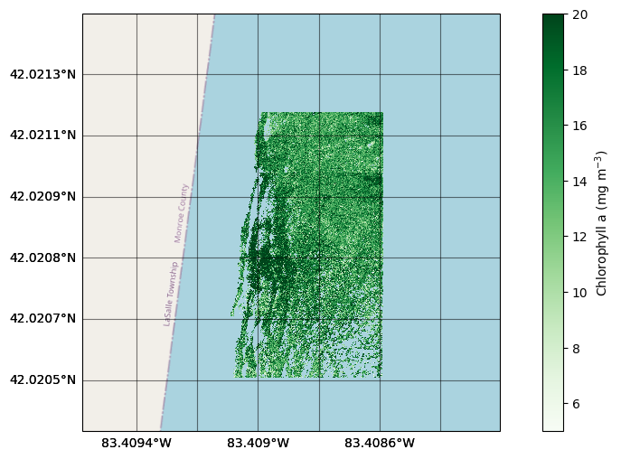
We can create a mosaic from all the individual georeferenced images. Let’s review the available options.
[75]:
?dronewq.mosaic
Signature:
dronewq.mosaic(
input_dir,
output_dir,
output_name,
method='mean',
dtype=<class 'numpy.float32'>,
band_names=None,
)
Docstring:
Mosaic multiple raster files into a single GeoTIFF.
This function reads all raster files in `input_dir` and merges them into
one mosaic using the specified merging method. If `band_names` is provided,
the mosaicked result is written as multiple single-band files—one file per
band—named using the provided band names. Otherwise, a single multi-band
raster is written.
Parameters
----------
input_dir : str
Path to a directory containing the input rasters to mosaic.
output_dir : str
Path to the directory where the output raster(s) will be saved.
The directory is created if it does not exist.
output_name : str
Base filename (without extension) for the mosaicked output.
method : {"mean", "first", "min", "max"}, optional
Method used to combine overlapping pixels when multiple rasters
cover the same area. Default is `"mean"`.
dtype : numpy.dtype, optional
Data type of the output raster. Defaults to `np.float32`.
band_names : list[str] or None, optional
If provided, one output file will be created per band, using the given
band names (e.g., `["red", "green", "blue"]`).
The number of entries must match the number of bands in the input
rasters.
Returns
-------
str
The filepath of the generated mosaic (or the first band file if
`band_names` is provided).
Notes
-----
- This function assumes all rasters share the same coordinate reference
system (CRS).
- When multiple input files are found, the output extent is computed to
cover all rasters.
File: ~/Developer/DroneWQ/src/dronewq/core/mosaic.py
Type: function
We will make a mosaic from all the georeferenced chlorophyll a images, calculating the mean of overlapping pixels.
[76]:
input_dir = settings.output_dir / 'georeferenced_masked_chl_hu_ocx'
output_dir = settings.output_dir / 'mosaic_chl_hu_ocx'
dronewq.mosaic(input_dir, output_dir, output_name = 'mean_mosaic_chl_hu_ocx',
method='mean', band_names = None)
100%|██████████| 328/328 [00:40<00:00, 8.01it/s]
[76]:
'../Lake_Erie/hedley_dls_rrs/mosaic_chl_hu_ocx/mean_mosaic_chl_hu_ocx.tif'
Now let’s plot the mosaicked image.
[77]:
fig, ax = plt.subplots(nrows = 1, ncols = 1, figsize=(12, 6), subplot_kw = dict(projection = Mercator()))
ax_0, mappable_0 = dronewq.plot_georeferenced_data(ax=ax, filename=f"{settings.output_dir}/mosaic_chl_hu_ocx/mean_mosaic_chl_hu_ocx.tif",
vmin=0, vmax=20, cmap='Greens', norm=None, basemap = cx.providers.Esri.WorldImagery)
ax_0.set_title('')
plt.colorbar(mappable_0, label='Chlowrophyll a (mg $m^{-3}$)')
[77]:
<matplotlib.colorbar.Colorbar at 0x7fadbdd35310>
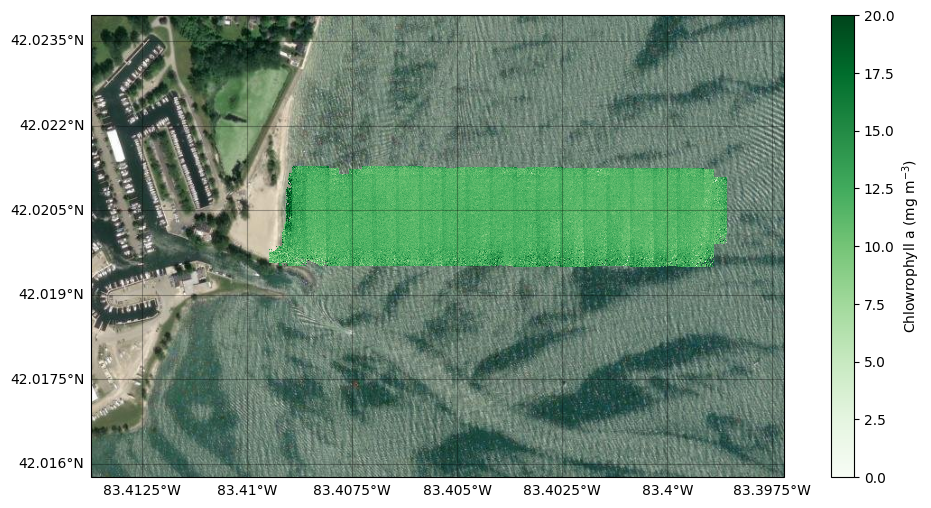
We can also downsample the mosaic to reduce its spatial resolution. This is useful for decreasing the file size when working with large mosaics.
[78]:
?dronewq.downsample
Signature:
dronewq.downsample(
input_tif,
output_dir,
scale_x,
scale_y,
method=<Resampling.average: 5>,
)
Docstring:
Downsample a raster by reducing its spatial resolution.
This function reads the input raster and resizes it by the specified
factors (`scale_x`, `scale_y`) using the given resampling method.
The resulting downsampled raster is saved to `output_dir`.
Parameters
----------
input_tif : str
Path to the input GeoTIFF to downsample.
output_dir : str
Directory where the downsampled raster will be saved.
The directory is created if it does not exist.
scale_x : int
Horizontal downsampling factor.
For example, `scale_x=2` halves the raster width.
scale_y : int
Vertical downsampling factor.
For example, `scale_y=2` halves the raster height.
method : rasterio.enums.Resampling, optional
The resampling algorithm to apply (e.g., `Resampling.average`,
`Resampling.nearest`, `Resampling.bilinear`).
Default is `Resampling.average`.
Returns
-------
str
The filepath of the generated downsampled raster.
Notes
-----
- The affine transform is automatically scaled to match the new resolution.
- For a full list of resampling methods, see Rasterio's documentation.
File: ~/Developer/DroneWQ/src/dronewq/core/mosaic.py
Type: function
We will downsample the width and height of the mosaic by 15%, using a nearest neighbor resampling algorithm.
[79]:
input_dir = settings.output_dir / 'mosaic_chl_hu_ocx' / "mean_mosaic_chl_hu_ocx.tif"
output_dir = settings.output_dir / 'mosaic_chl_hu_ocx'
dronewq.downsample(input_dir, output_dir, scale_x = 15, scale_y = 15, method = Resampling.nearest)
[79]:
'../Lake_Erie/hedley_dls_rrs/mosaic_chl_hu_ocx/mean_mosaic_chl_hu_ocx_x_15_y_15_method_nearest.tif'
And let’s plot it:
[80]:
fig, ax = plt.subplots(nrows = 1, ncols = 1, figsize=(12, 6), subplot_kw = dict(projection = Mercator()))
ax_0, mappable_0 = dronewq.plot_georeferenced_data(ax=ax, filename=f"{settings.output_dir}/mosaic_chl_hu_ocx/mean_mosaic_chl_hu_ocx_x_15_y_15_method_nearest.tif",
vmin=5, vmax=15, cmap='Greens', norm=None, basemap = cx.providers.Esri.WorldImagery)
ax_0.set_title('')
plt.colorbar(mappable_0, label='Chlorophyll a (mg $m^{-3}$)')
[80]:
<matplotlib.colorbar.Colorbar at 0x7fad35190690>
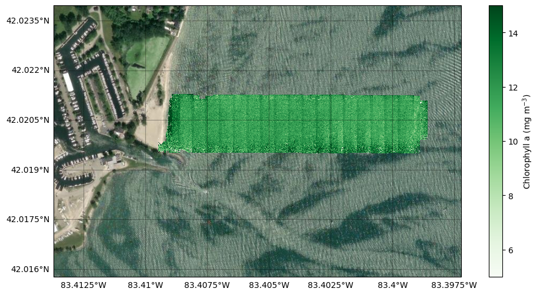
Some striping in the mosaic is visible because the drone/sensor changes yaw angles between transects. Processing and mosaicking a larger dataset could reveal broader water quality patterns or the presence of algal blooms.